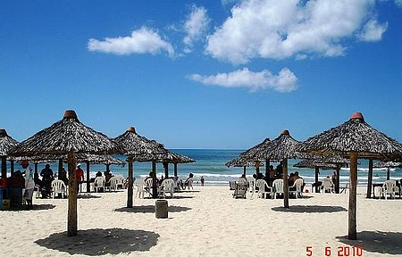

Hackathon Social
Ponto Turístico
Praia do Futuro

A Praia do Futuro é uma praia e também um bairro na área leste da cidade de Fortaleza, capital do estado do Ceará. É considerada uma das mais conhecidas praias do Nordeste. Com aproximadamente 8 km de extensão, possui um corredor de "barracas" (restaurantes com comida típica e frutos do mar), feitas normalmente de palha de carnaúba, onde são servidos uma variedade de pratos típicos. A praia tem muito movimento nos dias de quinta-feira a noite, dia da tradicional caranguejada, prato típico.
O bairro Praia do Futuro tem este nome devido a um anúncio da Imobiliária Antônio Diogo, que, em 1966, fez divulgação do "Novo Bairro". Na mesma época, esta área de Fortaleza era pouco frequentada, já que, por motivos culturais da época, as famílias da alta classe não poderiam ter contato com a classe bastarda, que ocupava parte daquela área. Em 1968, finalmente, a praia começou a ter suas primeiras quadras e lotes, que se estenderam até a foz do Rio Cocó. Em 1969, foi iniciada a primeira via do bairro, que, tempos mais tarde, se transformaria na Avenida Dioguinho, nome vinda da mesma imobiliária(Diogo Vital de Siqueira). Em 1970, é iniciada a segunda via, que também tornou-se avenida na década de 80, na Avenida Zezé Diogo, nome vindo de um dos representantes da Imobiliária(José Diogo Vital de Siqueira). Em 2003, a imobiliária Antônio Diogo "fecha", mas com grande patrimônio ainda pertencente, a venda de lotes no "Novo Bairro" é encerrada e, com isso, nascem os problemas de ocupações sem planejamento do Bairro
Para mais informações clique aqui.